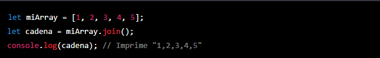

- Instancien objetos con class constructor o con funcion. Este objeto tiene que tener los siguientes propiedades: nombre, apellido, edad, direccion, nDeCuenta, clientePreferencial, gastosDeTarjeta.
- Crear una variable que contenga un array vacío ej: = []
- Quiero que instancien 5 nuevos objetos a partir de esto y que pusheen esos nuevos objetos a un array vacío. El array tiene que estar creado antes de hacer el push.
- Visualicen en consola, con console.table, el array con los objetos que pushearon.
- Con un for, vamos a iterar sobre todos esos valores. Vamos a visualizar en consola cada uno de los nombres de los clientes.
Consignas:
Anotaciones:
Temario de la clase:
- Arrays
- Metodos y operaciones
- Arrays de Objetos
Arrays
Un array es una estructura de datos en JavaScript que permite almacenar una colección de elementos. Estos elementos pueden ser de cualquier tipo de dato, como números, cadenas de texto, objetos, etc. Los arrays son muy útiles para organizar y manipular grandes cantidades de datos de manera eficiente y sencilla.
Para crear un array en JavaScript, podemos utilizar la notación de corchetes, como en el siguiente ejemplo:
En este caso, hemos creado un array llamado "miArray" que contiene cinco elementos: 1, 2, 3, 4 y 5. Cada uno de estos elementos ocupa una posición en el array, conocida como índice. En JavaScript, los índices de los arrays empiezan en 0, por lo que el primer elemento del array anterior tiene el índice 0, el segundo tiene el índice 1, y así sucesivamente.
Podemos acceder a cualquier elemento del array utilizando su índice, como en el siguiente ejemplo:
Podemos también modificar el valor de un elemento del array utilizando su índice y asignándole un nuevo valor:
Además de elementos numéricos, podemos crear arrays que contengan elementos de cualquier otro tipo de dato, como cadenas de texto o objetos:
En el primer caso, hemos creado un array llamado "nombres" que contiene tres elementos de tipo string: 'Juan', 'Pedro' y 'Pablo'. En el segundo caso, hemos creado un array llamado "objetos" que contiene tres elementos de tipo objeto, cada uno de ellos con una propiedad "nombre".
Metodos
Los métodos de arrays son funciones que podemos utilizar en JavaScript para manipular y trabajar con arrays de manera más sencilla. A continuación, se explicarán algunos de los métodos de arrays más comunes y su uso:
length: Este método nos permite conocer la longitud de un array, es decir, el número de elementos que contiene. Se utiliza de la siguiente manera:
push: Este método nos permite añadir un nuevo elemento al final de un array. Se utiliza de la siguiente manera:
unshift: Este método nos permite añadir un nuevo elemento al principio de un array. Se utiliza de la siguiente manera:
shift: Este método nos permite eliminar el primer elemento de un array. Se utiliza de la siguiente manera:
pop: Este método nos permite eliminar el último elemento de un array. Se utiliza de la siguiente manera:

splice: Este método nos permite eliminar elementos de un array y, opcionalmente, añadir nuevos elementos en su lugar. Se utiliza de la siguiente manera:
En este caso, hemos eliminado los elementos de índices 2 y 3 (es decir, 3 y 4) y hemos añadido los elementos 6 y 7 en su lugar.
join: Este método nos permite convertir un array en una cadena de texto. Se utiliza de la siguiente manera:
Podemos especificar un separador como argumento del método para que se utilice entre cada elemento del array en la cadena resultante. Por ejemplo:
concat: Este método nos permite unir dos o más arrays en uno solo. Se utiliza de la siguiente manera:
slice: Este método nos permite obtener una porción de un array. Se utiliza de la siguiente manera:
En este caso, hemos obtenido un nuevo array que contiene los elementos de índices 2 y 3 (es decir, 3 y 4) del array original.
indexOf: Este método nos permite buscar un elemento en un array y nos devuelve su índice si se encuentra, o -1 si no se encuentra. Se utiliza de la siguiente manera:
includes: Este método nos permite comprobar si un array incluye un determinado elemento. Se utiliza de la siguiente manera:
reverse: Este método nos permite invertir el orden de los elementos de un array. Se utiliza de la siguiente manera:
Arrays de Objetos: Diferencia entre Array y Array de objetos
Un array es una estructura de datos que nos permite almacenar una colección de elementos de cualquier tipo de dato. Por ejemplo, podemos crear un array que contenga números, cadenas de texto, objetos, etc.:

En este caso, tenemos un array que contiene cuatro elementos: un número, una cadena de texto, un objeto y otro array.
Por otro lado, un array de objetos es un array que contiene elementos que son objetos. Por ejemplo:
En este caso, tenemos un array que contiene tres elementos, cada uno de ellos es un objeto con dos propiedades: "nombre" y "edad".
Aunque los arrays y los arrays de objetos se parecen en algunos aspectos, existen algunas diferencias importantes:
En un array de objetos, cada elemento es un objeto, por lo que podemos acceder a sus propiedades utilizando la notación de punto. Por ejemplo:
En un array normal, no podemos acceder a las propiedades de los elementos de esta manera, ya que los elementos pueden ser de cualquier tipo de dato.
Los arrays de objetos son útiles cuando queremos almacenar información relacionada, como por ejemplo una lista de personas con sus respectivos nombres y edades. En un array normal, tendríamos que almacenar esta información de manera separada y luego relacionarla de alguna manera, lo que puede ser más complicado.